本包逐图公开合成界面、准确来源及独立结论。ADAPTED是明确适配；MAPPED是同类容器；MISSING是缺直接原参考；FAIL保留可见问题。拍图/并包完整不等于严格全产品1:1，也不证明真实桌面。旧图、旧失败和旧源码身份不倒改；修复须另看新来源。
env-drawer-native-idle-create-proxy · 1440×900
ADAPTED — Local direct-network, import-return/draft and independent-save explanations are readable; the local proxy/preferences density is intentionally unlike commercial ads/sync settings.,Full 148.0.7778.215 · 已核验 fits before the arrow; fingerprint-chromium helper is readable. No V01 selected-label clipping.,Startup URL, 1280×800 window preference and restore toggle fit. Fixed-identity helper is also visible at this body position.,Create title, 换一套/local-save hint, Cancel, Create and Create-and-open footer are clear, without a foreground overlay.,Mapped same-viewport original is container-only; local business state, actual installed build and callback preservation are not certified.
同类参考容器：environment-create-proxy；不是同名原商业执行。
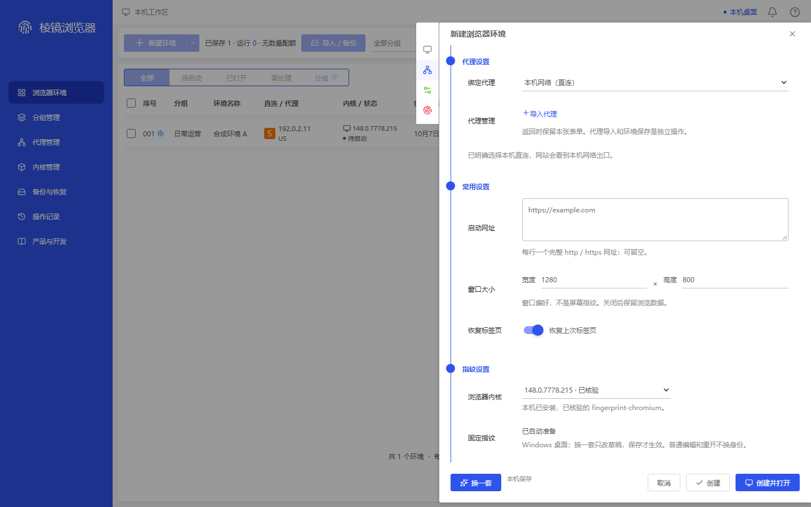
e83bd86fe8e32e0d1e375dc4a1c88f6786e968ebc5e582831e52dae522fad1b3
env-drawer-native-idle-create-preferences · 1440×900
ADAPTED — Startup URL box, full per-line URL helper, width/height preference and not-screen-fingerprint/data-retention wording fit; restore toggle is readable.,Full 148.0.7778.215 · 已核验 and family helper fit, with visible space before arrow; no V01 clipping.,Fixed-identity explanation, seed 180800001, en-US, America/New_York and non-IP-measurement suggestion are visible without row collision.,Title and full fixed Create footer are unobscured. Local preferences are ADAPTED, not the original sync/advertising controls.,environment-create-proxy supplies only a container comparison, not a direct preferences-state original or identity-conservation proof.
同类参考容器：environment-create-proxy；不是同名原商业执行。
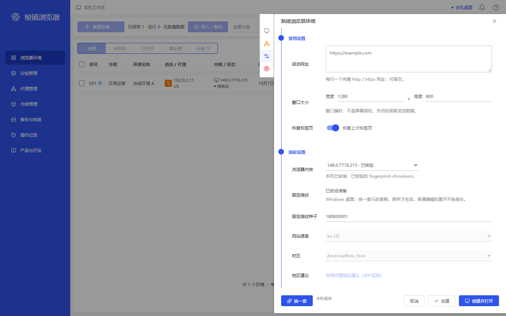
43818eb9237b35549102f1c2dde3b845e2ada96c922481f2d99be5b6492eba0c
env-drawer-native-idle-create-fingerprint · 1440×900
ADAPTED — Full 148.0.7778.215 · 已核验, arrow gap and fingerprint-chromium helper are readable; V01 does not recur.,Fixed-identity/draft-save-cancel helper, seed 180800001, language/timezone and CPU preference fit.,GPU/memory/font/drawing are described as kernel-generated, not fake editable or observed values; this safety content is ADAPTED from original hardware editors.,Advanced-settings link, Create title and entire fixed footer fit; no overlay collision or font/window reduction is visible.,Container mapping is not direct local-state equivalence, real kernel application or identity preservation over time.
同类参考容器：environment-create-fingerprint；不是同名原商业执行。

bb95f781196d4ab839e8a8b7d54aa79ef4b41c54a306cf66f6f695afd686831c
env-drawer-native-idle-create-bottom · 1440×900
ADAPTED — This actual file was opened separately despite byte identity with the fingerprint file; it was compared to its different assigned bottom original.,Full 148.0.7778.215 · 已核验 and family helper fit; fixed seed, language/timezone, CPU and no-fake-observation explanation are readable.,Advanced link and title/footer fit with ordinary unchanged compact spacing; no V01 clipping or overlay recurrence.,The current bottom does not reproduce original hardware, MAC/port/TLS/plugin/memory or launch-parameter editors; intentional local capability/safety presentation is ADAPTED.,Equal current bytes do not establish a second independent scroll focus, direct original-state equivalence or whole-cell coverage.
同类参考容器：environment-create-bottom；不是同名原商业执行。
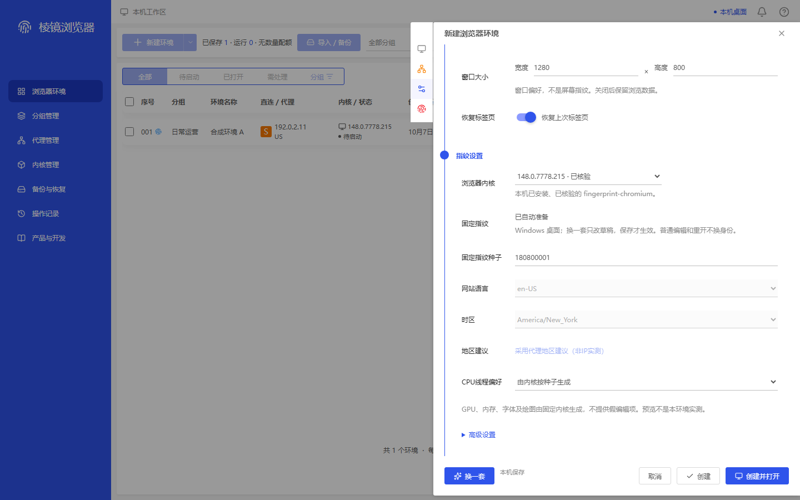
bb95f781196d4ab839e8a8b7d54aa79ef4b41c54a306cf66f6f695afd686831c
env-drawer-native-kernel-select-real-scope · 1440×900
ADAPTED — Open native-style menu is actually visible: complete 148.0.7778.215 · 已核验 and active 151.0.9000.11 · 已核验 options fit.,Selected B-build trigger also displays the complete version/status with arrow space; no V01 clipping.,Intentional menu occlusion of immediate helper/fixed-identity rows is normal popover layering; neither title nor fixed Create footer is covered.,Assigned original is environment-create-fingerprint, not a substituted kernel-selector original. Direct current popup/API fixture state is MISSING.,Service IDs, verified installation, selected-build ownership and no implicit migration/save are not pixel-certified; no extra menu capture is required.
同类参考容器：environment-create-fingerprint；不是同名原商业执行。
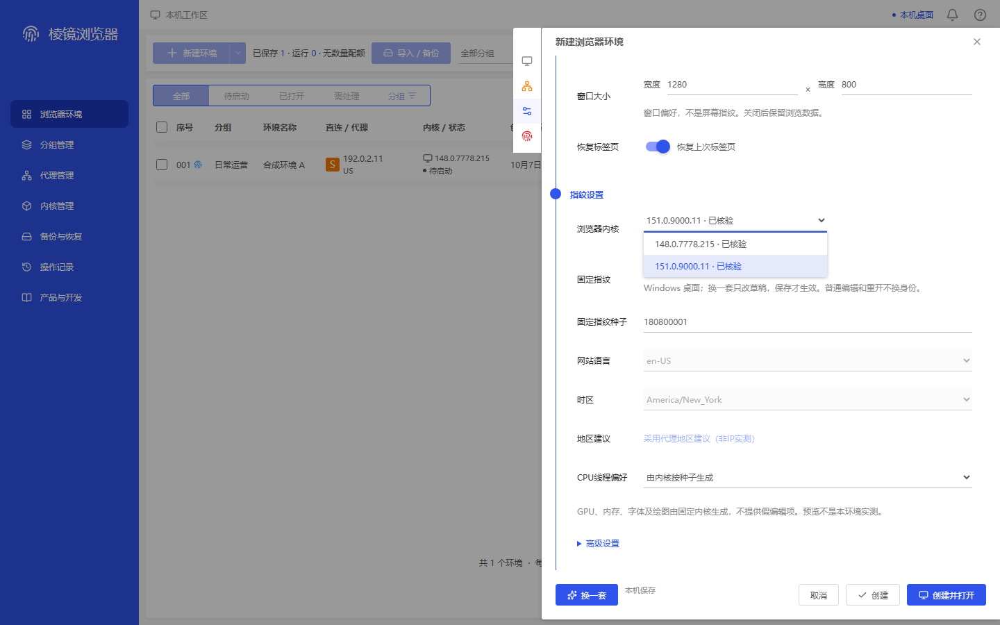
fb8eff4f593380d751210bde5d2d3a3538f7c8ae18e416007a66250cb006d4b0
env-drawer-native-saved-build-lock · 1440×900
ADAPTED — Disabled-looking saved A-build field shows all of 148.0.7778.215 · 已核验; no V01 text loss at arrow.,Saved precise-build/migration helper retains fingerprint-chromium across a natural two-line wrap, without truncation or row collision.,Retained-identity text, seed 172600001, language/timezone, CPU and no-fake-observation wording are readable.,Edit title, 换一套/local-save hint, Cancel and Save fit; local lock/safety wording is ADAPTED, not original Cookie/2FA content.,Still pixels do not prove a native lock, migration enforcement or preserved identity/storage.
同类参考容器：environment-edit；不是同名原商业执行。
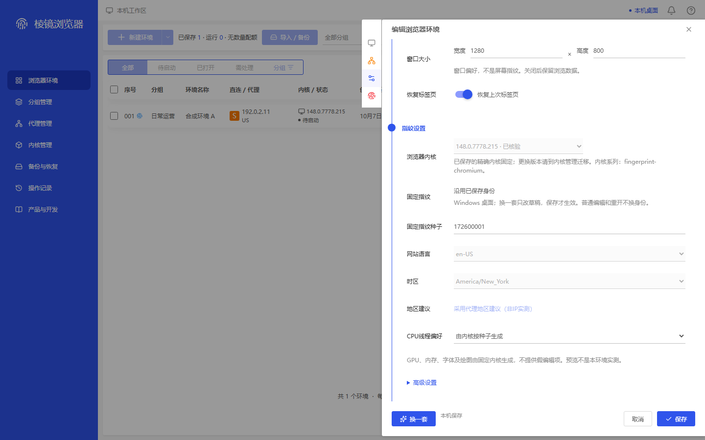
1811189ba2f44ddd2b2e3957655a1f42d96df1c62da5b8e4bc40639f3ad9c34d
env-drawer-native-automatic-preview-busy · 1440×900
ADAPTED — Complete disabled-looking A-build version/status and full family helper are visible; no V01 clipping.,正在自动准备预览... is readable and distinct from idle/refusal; fixed seed remains displayed.,Footer spinner glyph, 换一套, 准备指纹中... and disabled-looking Create/Open controls fit without overlap.,Title and fixed footer are clear; native-looking busy presentation is local/safety ADAPTED with no direct frozen busy-state original.,A still spinner/disabled appearance does not prove request holding, no regeneration, callback ownership or native no-dispatch.
同类参考容器：environment-create-fingerprint；不是同名原商业执行。
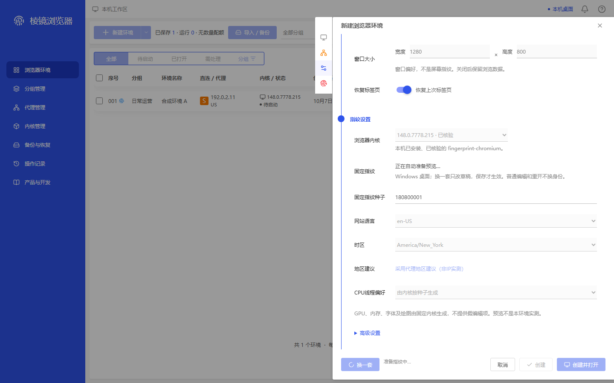
c7c7e464e6e33e1c9096256ea9a743502cdada1fad7056bfb8e4eccbe2e5064f
env-drawer-native-preview-failure-exact-retry · 1440×900
ADAPTED — Full selected 148.0.7778.215 · 已核验 and family helper fit; no V01 clipping.,Red 合成指纹预览失败；重试不更换种子。 strip and blue 重试指纹预览 link are fully readable, separated from adjacent rows.,Seed, language/timezone and CPU content fit; missing-usable-kernel footer wording and disabled-looking Create/Open controls remain readable.,Title/footer are clear; this is ADAPTED honest refusal/retry UI, not a direct frozen original failure state.,Visible retry copy does not certify same-seed/request retry, effect budgets or response ownership.
同类参考容器：environment-create-fingerprint；不是同名原商业执行。
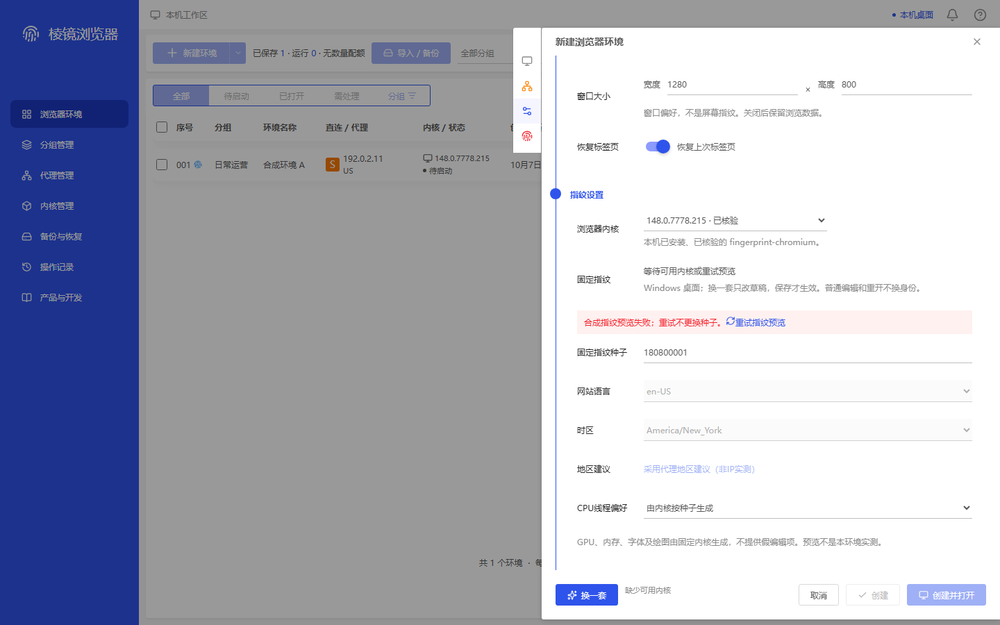
ee7bdd3160cbf803e2ec742f24dc2e7345a12ea3de38509ad4879f0258dcca65
env-drawer-native-generated-preview-capability-source · 1440×900
ADAPTED — Actual source blocks are read: CPU direct-configurable with installed-build/non-current-read and synthetic-not-real-observation labels; GPU/WebGL seed-generated/source-derived/non-current-read; location/other unverified items with unprobed/no-edit labels. All three blocks and the final preview/bridge limitation fit inside the body; V02 focus failure does not recur.,Revision #1, synthetic-build-a, actual version 148.0.7778.215, synthetic generator/capability labels, language/window preference and full digest are visible. Seed change 180800001→180899999 and cancel/not-clear-data wording fit.,Selected kernel trigger is above this scrolled viewpoint: this is source-row evidence, not an additional selected-field V01 check or an all-technical-rows-at-once claim.,Actual full draft/save/cancel long toast is present around x188–552/y40–88, left of rail/drawer; Create title and footer remain clear. This is additional present-toast V04 evidence, not an absence/expiration inference.,Natural wheel-focused local source presentation is ADAPTED; fingerprint-randomized is only the frozen container/feedback mapping, not a direct capability-source state or native observation/commit proof.
同类参考容器：fingerprint-randomized；不是同名原商业执行。
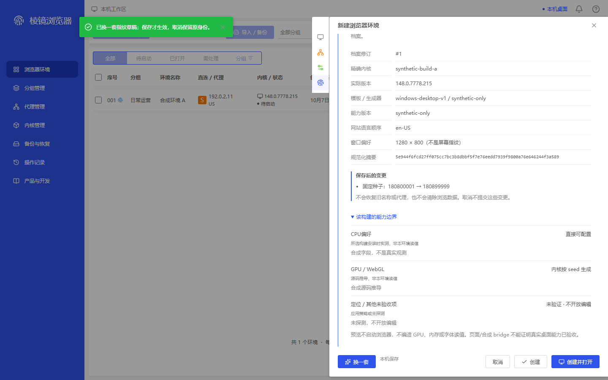
157c0cd201dda90471a96ee13e870de4ee11df37b9c6ae035575f14ff183b881
env-drawer-demo-technical-source-labels · 1440×900
ADAPTED — All four actual blocks fit and are read: identity/seed/cpu/acceptLanguages/timezone is demo input/revision-only; gpu/memory/font/canvas/audio is unverified with no fake reads; screen/scale follows real environment but has no observed screen value; browser menu language is unverified and website language is not verification. V02 does not recur.,Revision #1/core-148, 未核验，不假填版本, demo generator/capabilities, language order, window preference and demo digest are visible.,Final no-browser-launch/no-fabricated-read/synthetic-bridge caveat and collapsed saved-history (1) link are fully visible above footer.,Edit title and Save footer fit; footer explicitly says 仅演示. No toast is present and none is needed for source-view classification.,Technical/source safety disclosure is ADAPTED from original bottom editors; direct technical-state reference and real kernel evidence remain MISSING/unproved.
同类参考容器：environment-create-bottom；不是同名原商业执行。
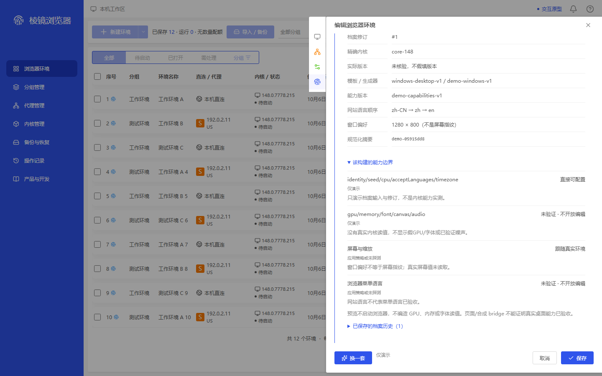
98ad9c0ab0e0b86ed784d0419af9934e78be31cb7c06b55e53914615bf935fb6
env-drawer-demo-rollback-preview-new-revision · 1440×900
ADAPTED — Actual full rollback-preview/save/name-proxy-data qualification toast fits at x140–600/y40–88, before rail/drawer; Edit title and footer remain clear. Direct present long-toast V04 evidence.,Expanded technical view shows #3 · 从 #1 回滚的新预览, core-148, 未核验，不假填版本, demo generator/capability labels, language order, 1280×800 not-screen preference and digest without row collision.,Generation/rollback-only-changes-draft and cancel-retains-current wording is visible; fixed seed/language/timezone and CPU context are also readable.,Local history/safety details and 仅演示 Save footer are ADAPTED, not a direct original rollback state.,No saved rollback, exact ownership, restored storage/identity or native incompatible-build behavior is certified by these pixels.
同类参考容器：environment-create-bottom；不是同名原商业执行。
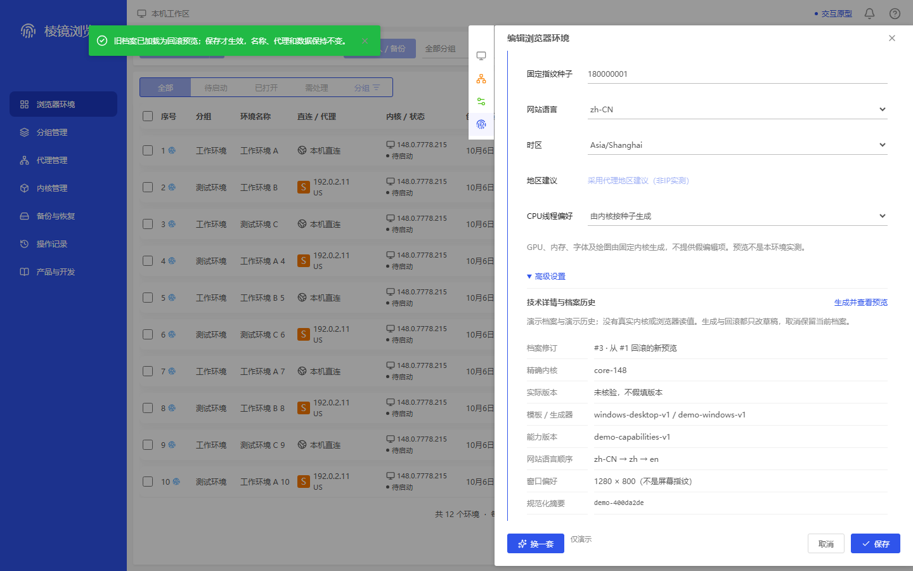
b1de2c705c5c5f2e0da5131b00d1e5000479c5267267a58b7630e43c24912ee5
env-drawer-native-rollback-and-incompatible-history · 1440×900
ADAPTED — Full present rollback/save/name-proxy-data toast fits at x140–600/y40–88, left of active drawer/rail; Edit title and Save footer are unobscured. Direct V04 evidence.,Readable #4 · 从 #1 回滚的新预览, synthetic-build-a, 148.0.7778.215, synthetic generator/capability labels, 1024×800 not-screen preference and full digest fit.,Synthetic existing-data reference environments/synthetic-environment/user-data and this-revision-keeps-it wording are visible near the body end, not covered by footer.,Installed-build evidence is expressly distinguished from a current environment measurement; generation/rollback only changes draft. This local history/source wording is ADAPTED.,Incompatible-history control is outside this captured viewpoint, not visually certified; no new callback photo is mandated. No real rollback commit or identity/storage conservation is proved.
同类参考容器：environment-create-bottom；不是同名原商业执行。
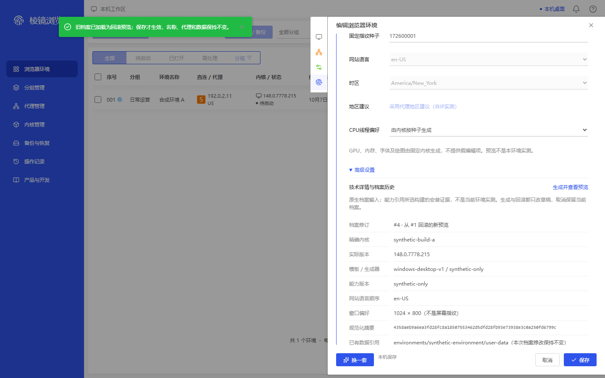
bfef58d0497a23268225245e67dfe5ba91996fa63f0261230c8dd46944a68c27
env-drawer-native-known-create-refusal · 1440×900
ADAPTED — Full selected 148.0.7778.215 · 已核验 and family helper fit; V01 clipping is absent.,Red 合成创建明确拒绝；没有受理新任务，草稿仍可编辑。 strip is completely visible above footer, without row/control collision.,Fixed seed and local safety helper remain readable; some preceding window values are above the current body clip, an ordinary scroll limit.,Create title and all Create footer controls fit. This is an in-form refusal strip, not floating-toast V04 evidence.,Local recovery copy is ADAPTED; pixels cannot certify original-preview preservation, no accepted task or native method/effect counts.
同类参考容器：environment-create；不是同名原商业执行。
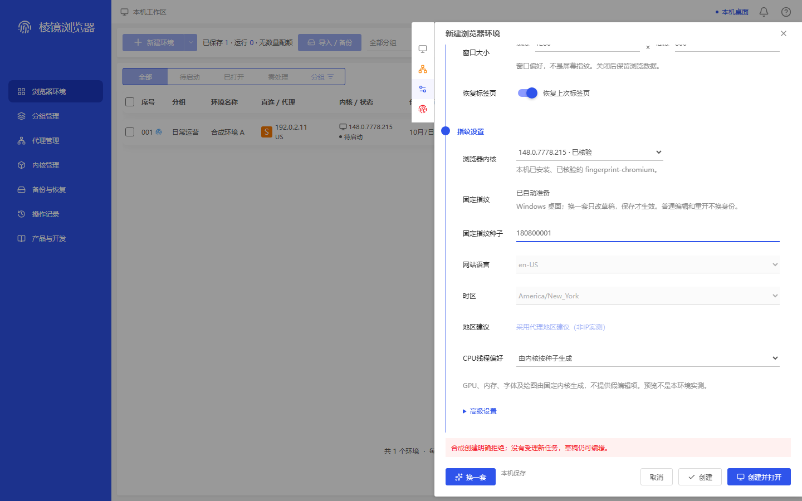
813bbafdfd218a72497ef79a26b2022020805389ada39c3cb38c656ec04d37dc
env-drawer-native-known-profile-revision-refusal · 1440×900
ADAPTED — Complete disabled-looking saved A-build version/status fits; saved-build/migration helper keeps fingerprint-chromium with a readable two-line wrap. No V01 clipping.,Red 合成档案修订拒绝；原身份未覆盖，草稿仍可编辑。 strip fits above fixed footer without occlusion.,Retained-identity text, seed 172600001 and local language/timezone/CPU/no-fake-read content are readable.,Edit title, 换一套/local-save hint, Cancel and Save remain clear. In-form strip is not a floating-toast V04 check.,ADAPTED refusal/safety presentation has no direct original-state comparator; saved identity/expected-revision enforcement is not pixel proof.
同类参考容器：environment-edit；不是同名原商业执行。
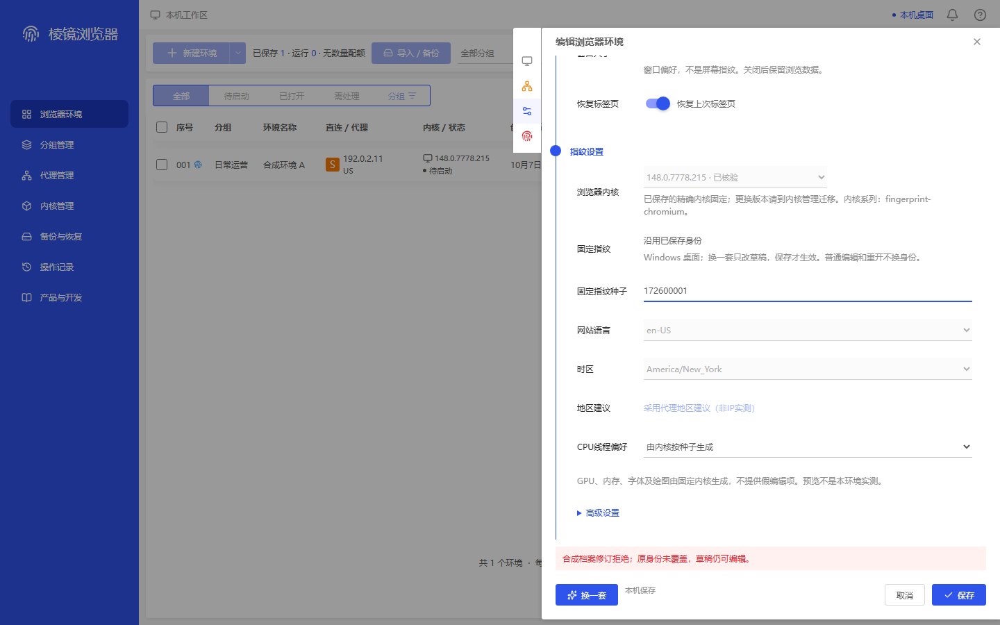
6ca716f5d356dc81198ded8b28b47ed40640f53d24336e542baded5da60e0f28
env-drawer-native-history-read-error-on-form · 1440×900
ADAPTED — Full saved A-build/version/status and naturally wrapped family/migration helper are readable; V01 does not recur.,Red 合成档案历史读取失败；环境草稿仍可编辑。 strip fits in the form above footer.,Retained-identity/seed and other displayed local fields fit without overlap; preceding content can be above this ordinary body-scroll clip.,Edit title and entire Save footer are unobscured; no floating toast is present, so this is not V04 toast evidence.,Local error recovery is ADAPTED, with direct original history-error state MISSING and exact history ownership/read/save behavior not certified.
同类参考容器：environment-edit；不是同名原商业执行。
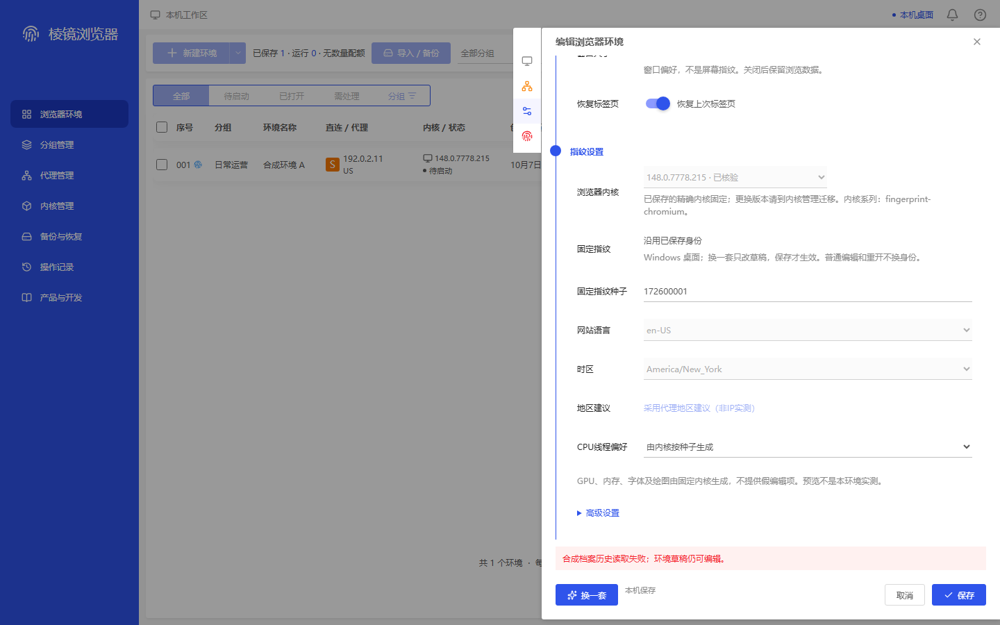
bbd5c5000ac1ebd9a3d8a58512d26fc88f0a8112397855840d396ecb32f73bcd
env-drawer-native-create-terminal-zero-editable-draft · 1440×900
ADAPTED — Full selected 148.0.7778.215 · 已核验 and family helper are readable; no V01 clipping.,Red 合成创建终态为零项完成；草稿已保留。 strip fits in full above footer, distinct from pending uncertainty.,Seed and fixed-identity/no-fake-observation wording fit; partial preceding window rows reflect ordinary body scroll.,Create title and all fixed Create controls are clear; terminal-zero recovery is ADAPTED, not direct original content.,No native zero-effect result, editable behavior over interaction, original-request settlement or new-create dispatch is certified.
同类参考容器：environment-create；不是同名原商业执行。
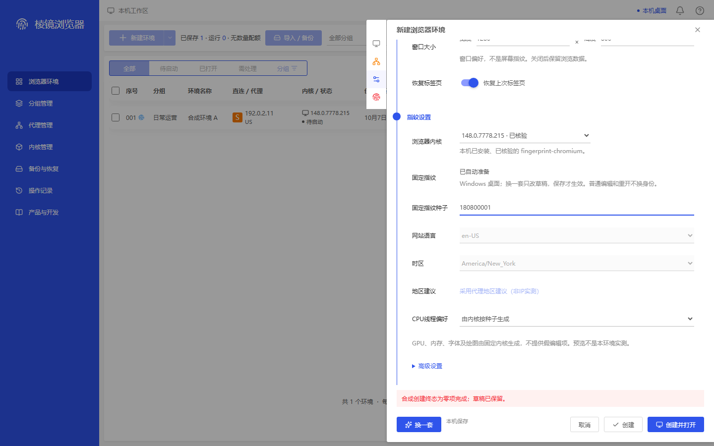
8688c89fbff797269bbc8ffa9a0840a99f7162e4c9fd7cf42133ddc6191bb31a
env-drawer-native-create-persistence-pending-no-success · 1440×900
ADAPTED — Task spinner, 创建环境 · 1 / 1 and 取消余下任务 fit around x238–502/y825–876, entirely in unused left area before rail/drawer. No V03 footer intersection.,Full 换一套, 原请求待核实, disabled-looking Cancel and 重试核实创建结果 footer are readable; Create title remains clear.,Complete disabled-looking 148.0.7778.215 · 已核验 and family helper fit; V01 does not recur. Local pending controls retain normal geometry/type.,1 / 1, an extra synthetic background row and pending-looking controls do not demonstrate persisted success or original-operation settlement.,Active-drawer placement and uncertainty wording are ADAPTED; direct original pending state is MISSING. Activation/inertness rule in other modal contexts is not certified by still pixels.
同类参考容器：environment-create；不是同名原商业执行。
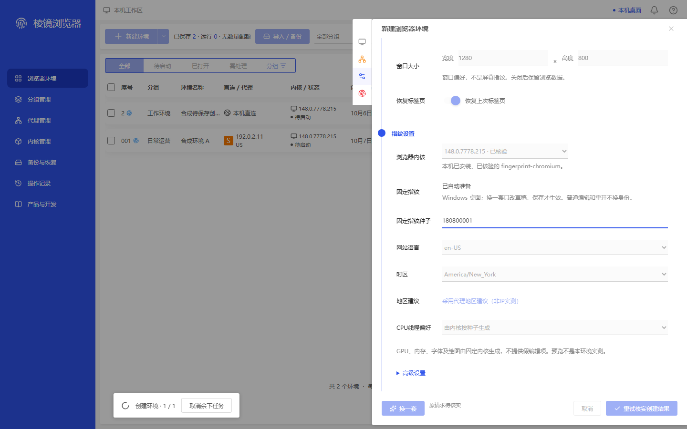
e8394beb6d9f009276744d494557f7e0306c4daf767a1a644daada2d2ba9a6a5
env-drawer-native-idle-create-proxy · 1280×800
ADAPTED — Direct-network, import-return/draft and independent-save explanations fit, as do URL box/window preference/restore toggle; local density and safety copy are ADAPTED.,All selected 148.0.7778.215 · 已核验 digits/status and arrow space are visible; no V01 clipping.,Following family helper begins below the 721px body clip at this smaller proxy focus. This is ordinary next-row scrolling, not a claim that helper is wholly visible here or a selected-control defect.,Create title and all fixed footer controls fit, with unchanged 660px drawer and no foreground overlay.,Assigned same-viewport original is container-only; no direct local business-state or native/callback conservation certification.
同类参考容器：environment-create-proxy；不是同名原商业执行。
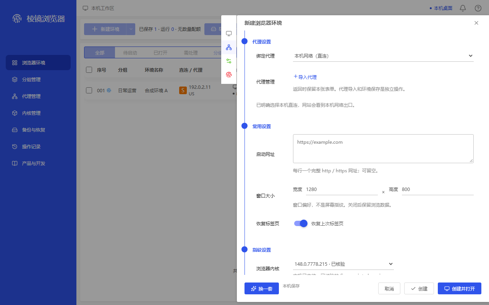
4dfbf3328faeeffcfa6df2a4ce289ba95b6e55b97f10c04288aa33dae6ceb60e
env-drawer-native-idle-create-preferences · 1280×800
ADAPTED — Startup URL/helper, width/height preference, not-screen-fingerprint/data-retention wording and restore toggle fit.,Complete 148.0.7778.215 · 已核验 and full fingerprint-chromium helper fit; no V01 clipping at arrow.,Fixed-identity/save-cancel wording, seed 180800001 and en-US are visible. Subsequent timezone/suggestion rows are outside this smaller preference focus, not borrowed from larger view.,Title and fixed Create footer remain readable; local preferences are ADAPTED rather than original sync/advertising controls.,Proxy original maps the frame only; direct preferences-state reference and real identity preservation are MISSING/unproved.
同类参考容器：environment-create-proxy；不是同名原商业执行。
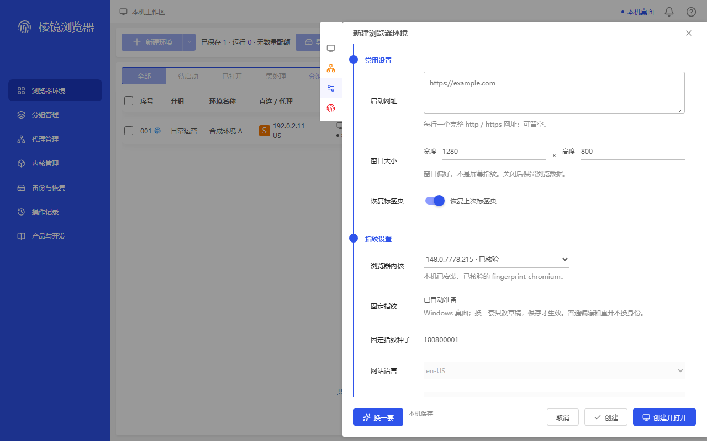
f8bc8e2fca058880bef1e18443b67eddbed3a045cbc15f9f755af8d6f75586ae
env-drawer-native-idle-create-fingerprint · 1280×800
ADAPTED — Complete 148.0.7778.215 · 已核验, arrow gap and full family helper are visible; no V01 clipping.,Fixed-identity/draft/save/cancel wording, seed 180800001, en-US, America/New_York, CPU preference and non-IP-measurement suggestion fit.,No-fake-GPU/memory/font/drawing/observation helper and advanced-settings link are fully visible above fixed footer.,Title and all Create controls fit with normal compact type/spacing; local fixed-identity/capability presentation is ADAPTED.,The frame mapping does not certify direct original content, real kernel application or identity/storage preservation.
同类参考容器：environment-create-fingerprint；不是同名原商业执行。
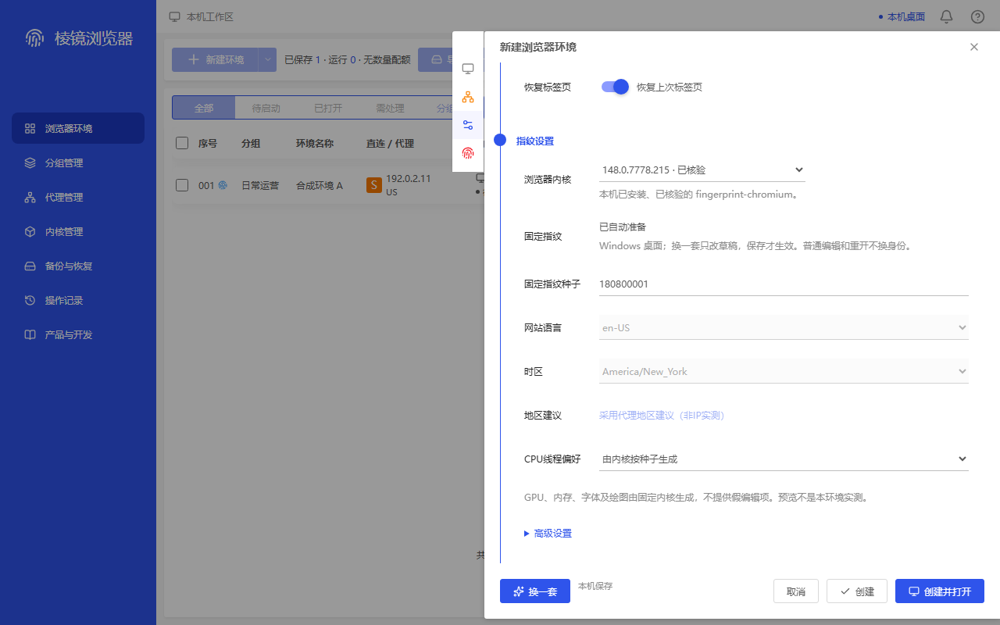
7f5c4c2145c85e1f3170d3b06212cf5d51a6ee7292bd4fa1b848479677d1a843
env-drawer-native-idle-create-bottom · 1280×800
ADAPTED — Separately opened this actual file despite fingerprint-byte identity; compared against assigned same-viewport bottom original.,Full selected A-build/status/family helper, fixed seed, language/timezone, CPU and no-fake-observation explanation fit; no V01 clipping.,Advanced link, title and fixed Create footer remain readable without overlays or reduced window/type/spacing.,Local capability/safety content is ADAPTED, not equivalent to original MAC/ports/TLS/plugin/hardware/memory/launch-parameter editors.,Equal current bytes do not certify separate current scroll positions, direct original bottom coverage or whole-cell PASS.
同类参考容器：environment-create-bottom；不是同名原商业执行。

7f5c4c2145c85e1f3170d3b06212cf5d51a6ee7292bd4fa1b848479677d1a843
env-drawer-native-kernel-select-real-scope · 1280×800
ADAPTED — Actual open menu shows both complete A/B version-and-verified options, with 151.0.9000.11 active; full selected B trigger/status fits before arrow. No V01 clipping.,Popup sits within body and deliberately covers immediate underlying helper/status rows, not foreground title or footer; this is ordinary menu layering.,Other local seed/language/timezone/CPU/no-fake-observation content and advanced link fit.,Comparison uses environment-create-fingerprint only; direct current menu/business-state original is MISSING and presentation is ADAPTED.,API fixture IDs/enforcement, ownership and no implicit migration/save are not established by pixels; no additional menu photograph is mandated.
同类参考容器：environment-create-fingerprint；不是同名原商业执行。
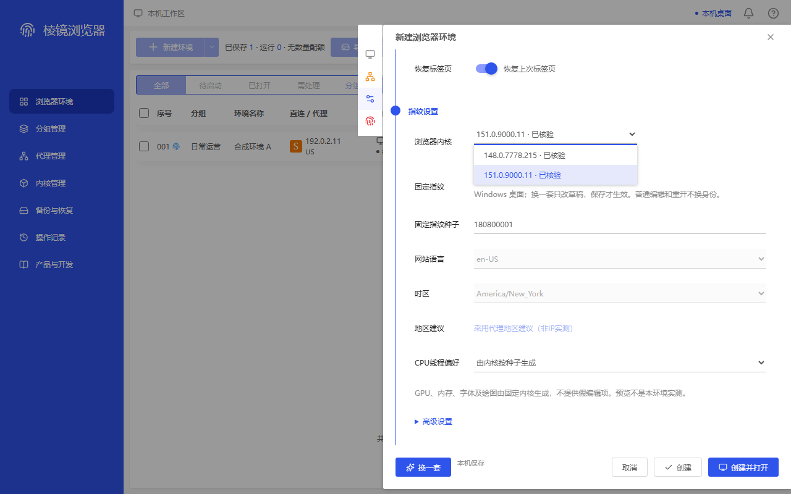
5a655d2d0fb46f4722379bebd01a08fb6579ef4f7068a9312bc205f6341789af
env-drawer-native-saved-build-lock · 1280×800
ADAPTED — Disabled-looking saved A-build displays full 148.0.7778.215 · 已核验 with arrow space; no V01 clipping.,Saved precise-build/migration helper retains full fingerprint-chromium via natural two-line wrapping, with no row collision.,Retained identity, seed 172600001, language/timezone and CPU/safety explanations fit; larger-view window-size row is naturally above this smaller clip.,Edit title, advanced link and complete Save footer are readable with unchanged frame/type. Local lock wording is ADAPTED.,Direct saved-lock original is MISSING; actual native migration/build lock and data/identity conservation are not certified.
同类参考容器：environment-edit；不是同名原商业执行。
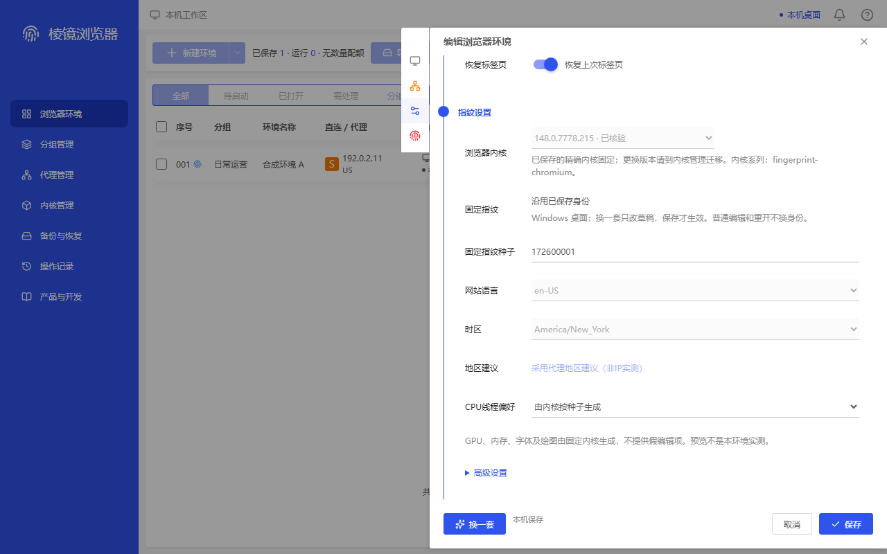
6b13105e920b33d7a204d6a78d517047241f184fdcfafb707c5b1d46c9515670
env-drawer-native-automatic-preview-busy · 1280×800
ADAPTED — Complete disabled-looking A-build/status and full family helper fit; no V01 clipping.,正在自动准备预览... is readable, with fixed seed and disabled-looking language/timezone/CPU fields; no adjacent text collision.,Footer spinner glyph, 换一套, 准备指纹中... and disabled-looking Create/Open buttons fit; title and fixed footer are unobscured.,Busy and fixed-identity safety wording is ADAPTED; direct frozen busy business state is MISSING.,A still spinner/disabled appearance does not certify automatic-request ownership, no regeneration or native no-dispatch.
同类参考容器：environment-create-fingerprint；不是同名原商业执行。
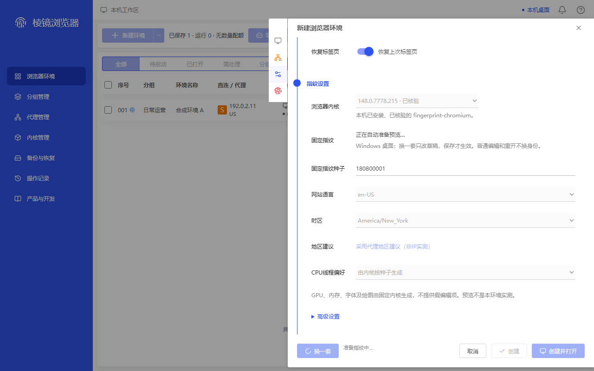
4f4d4761bef7ab5840326e8f59ce585b67880d46af8618a040d011c2ec12c048
env-drawer-native-preview-failure-exact-retry · 1280×800
ADAPTED — Complete selected A-build/status and family helper are readable; no V01 clipping.,Red preview-failure/retry-does-not-change-seed copy and 重试指纹预览 link fit in the body, with readable fixed seed and separated rows.,Language/timezone/CPU and no-fake-read explanation fit; footer missing-usable-kernel wording and disabled-looking Create/Open controls remain clear.,Title/footer are unobscured; following advanced link is outside this failure-focus clip, not a missing source-content claim.,Local retry/refusal safety UI is ADAPTED; direct original and exact request/seed/retry/effect semantics are MISSING/unproved.
同类参考容器：environment-create-fingerprint；不是同名原商业执行。
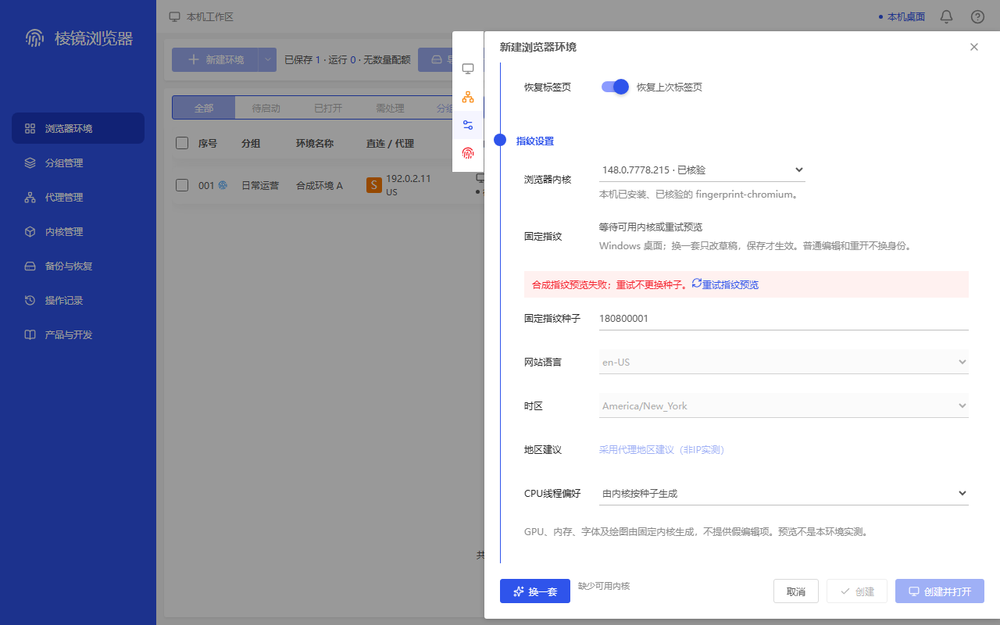
a48277adee127423154f99e930534dd8aec1445c7315585dff7b9d76d67c6cbd
env-drawer-native-generated-preview-capability-source · 1280×800
ADAPTED — All three actual CPU/GPU-WebGL/location-other capability blocks and final preview/bridge warning fit inside the body and are read. CPU installation evidence is not a current read and explicitly synthetic/not a real observation; GPU is source-derived/seed-generated; remaining items are unprobed/unverified/no-edit. V02 does not recur.,148.0.7778.215, synthetic-only generator/capability labels, language/window preference, full digest and seed-change/cancel qualification are readable. Earlier revision/build-ID rows are above this smaller viewport's current clip, not inferred from the large view.,Selected kernel trigger is outside the current source-focused body view; this record is not direct selected-field V01 evidence or proof every technical row is simultaneously in view.,Full draft/save/cancel toast is actually present around x108–472/y40–88, entirely left of rail/drawer. Create title and complete footer remain clear; additional actual V04 evidence, not a toast-expiration inference.,Natural body-wheel focus is ADAPTED local source disclosure with randomized-container mapping only; no native capability observation, real build enforcement or commit certification.
同类参考容器：fingerprint-randomized；不是同名原商业执行。
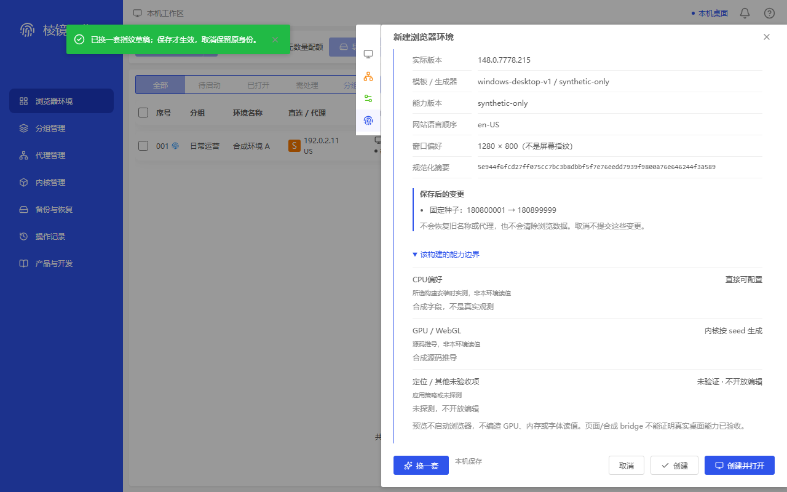
b7d3d6ea77478fd412b10506f834c92e4524ae366dc0ee70badec3f987718032
env-drawer-demo-technical-source-labels · 1280×800
ADAPTED — Actual four source blocks are fully readable: demo input/revision-only identity/seed/cpu/languages/timezone; unverified gpu/memory/font/canvas/audio with no fake reads; screen/scale not observed and window preference not screen fingerprint; unverified menu language not certified by website language. V02 does not recur.,Demo generator/capability version, language order, 1280×800 not-screen preference and digest are visible. Earlier revision/build/actual-version rows are above this current smaller clip and are not borrowed from the large view.,Final preview-not-launch/no-fabricated-read/synthetic-bridge warning and collapsed saved-history link are visible above footer, with no source-block/footer collision.,Edit title, 仅演示 hint, Cancel and Save remain clear at normal geometry/type; no toast is present and no V04 proof is inferred from absence.,Required honest demo/capability disclosure is ADAPTED, while direct original technical-state and real kernel-read evidence remain MISSING/unproved.
同类参考容器：environment-create-bottom；不是同名原商业执行。
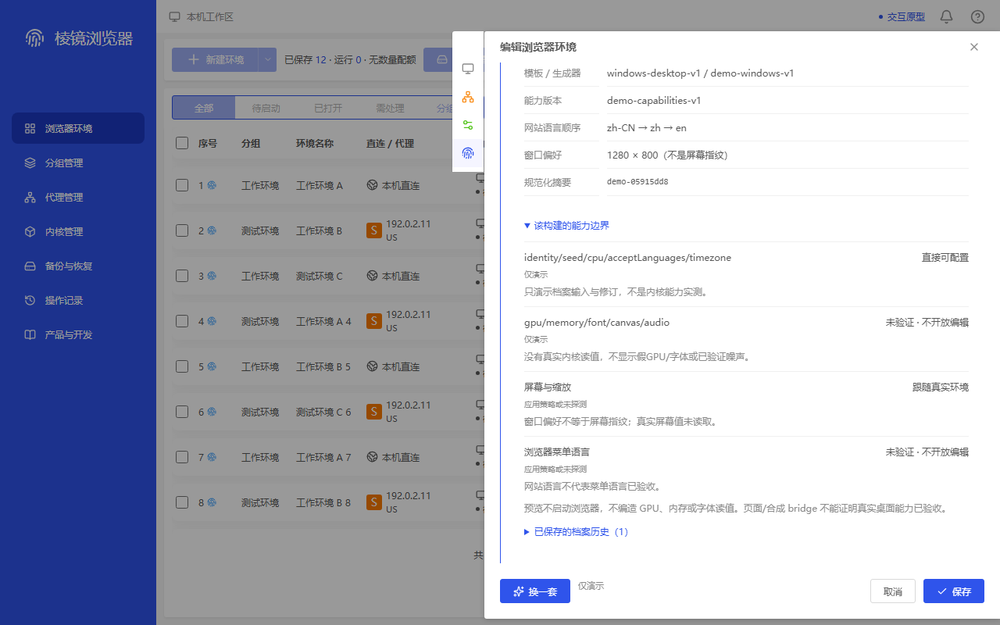
fd730cfda7907828722e9330b3eacbcd1df15750acf3c2b2fdc0c5f76ef4a77d
env-drawer-demo-rollback-preview-new-revision · 1280×800
ADAPTED — Full present rollback/save/name-proxy-data toast fits at x60–520/y40–88, left of rail/drawer, with close glyph and no Edit title/footer overlap. Direct V04 evidence.,Technical detail heading, draft/cancel qualification, #3 · 从 #1 回滚的新预览, core-148 and 未核验，不假填版本 fit.,Demo generator/capabilities, language order, 1280×800 not-screen preference and demo digest fit in separated rows. Earlier fixed-seed/language rows are naturally above this viewport's body focus.,Edit title, 仅演示 hint and full Save footer remain clear with normal compact spacing; local history/safety content is ADAPTED.,Direct original rollback state is MISSING; no saved rollback, exact preview ownership or real identity/storage conservation is certified.
同类参考容器：environment-create-bottom；不是同名原商业执行。
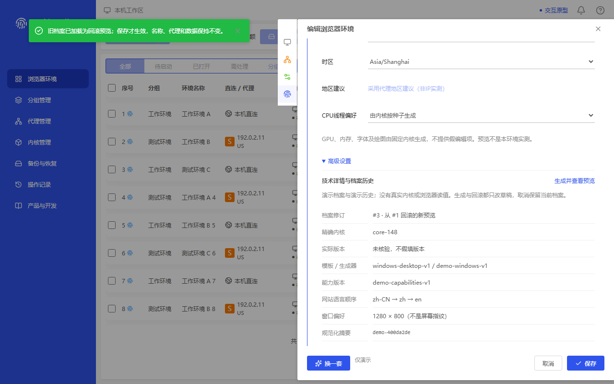
e2d74b83bff33dbf2116efadb952e78b723b5d1423aa2ddce79a29618dfc330f
env-drawer-native-rollback-and-incompatible-history · 1280×800
ADAPTED — Complete present rollback/save/name-proxy-data toast fits at x60–520/y40–88, left of rail/drawer; Edit title and Save footer remain unobscured. Direct V04 evidence.,#4 · 从 #1 回滚的新预览, synthetic-build-a, 148.0.7778.215, synthetic generator/capabilities, language and 1024×800 not-screen preference fit.,Full digest and environments/synthetic-environment/user-data with this-revision-keeps-it qualifier are readable near the body end; the last line is close to but not covered by the fixed footer.,Installed-build-versus-current-measurement and generation/rollback-only-changes-draft wording is visible and ADAPTED; earlier fixed-seed rows are outside this smaller current focus.,Incompatible-history disabled control is not in this screenshot, not certified, and no extra photo is mandated. Direct original/real commit/storage/identity behavior stays MISSING/unproved.
同类参考容器：environment-create-bottom；不是同名原商业执行。
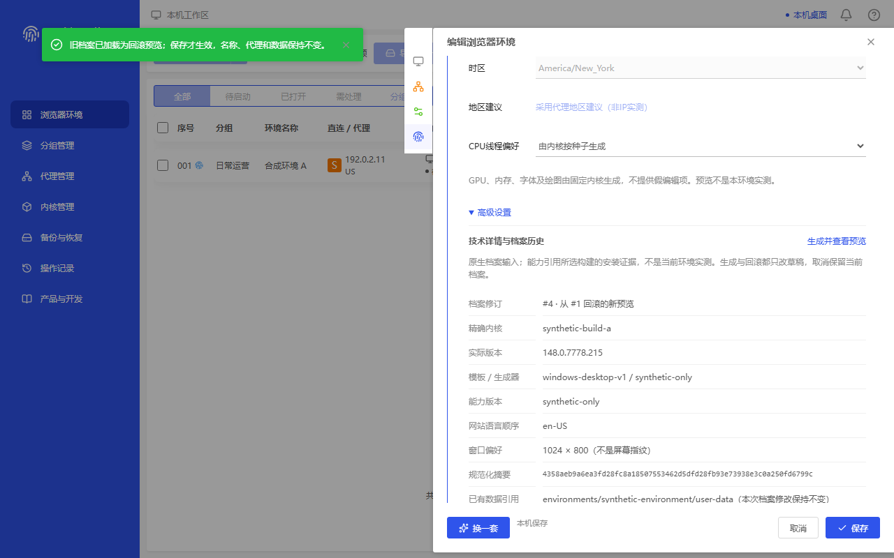
a04572d35d0967027a19752298bad8a27712f8ed5c22b0bf1b34d53372ffe835
env-drawer-native-known-create-refusal · 1280×800
ADAPTED — Complete 148.0.7778.215 · 已核验, arrow gap and full family helper are visible; no V01 clipping.,Full known-create-refusal/no-new-task/editable-draft red strip fits at bottom of form, above fixed footer.,Fixed identity/seed/language/timezone/CPU/safety wording fits; earlier preference rows are above this normal body-scroll focus.,Create title and full Create footer are clear. Red in-form strip is not floating-toast V04 evidence.,Local refusal/recovery presentation is ADAPTED; direct original state is MISSING and no native method/no-task/preview-preservation claim is pixel-certified.
同类参考容器：environment-create；不是同名原商业执行。
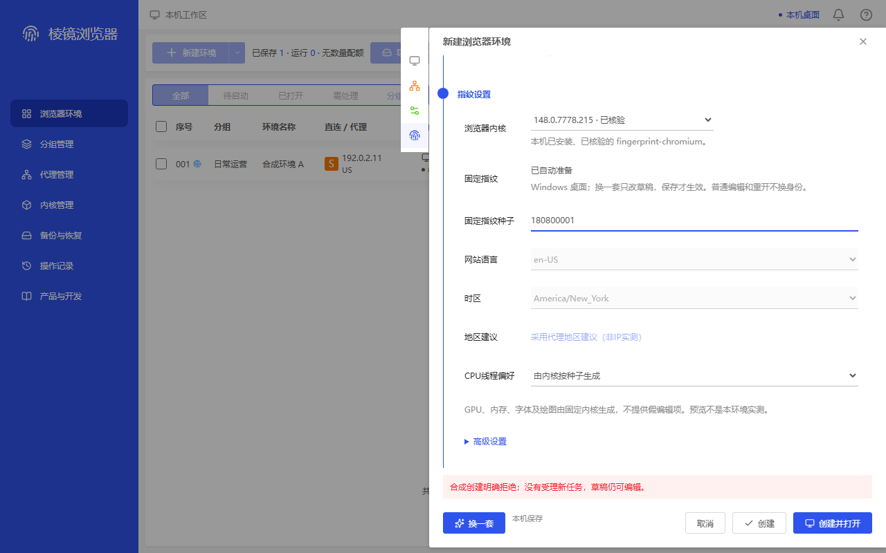
aa4edb643e0bdf41c1682a31acddce910ea08acd8e85a2911afae0873d5296e6
env-drawer-native-known-profile-revision-refusal · 1280×800
ADAPTED — Full disabled-looking saved A-build/status fits before arrow; full fingerprint-chromium remains in naturally wrapped migration helper. No V01 clipping.,Complete profile-revision-refusal/original-identity-not-overwritten/editable-draft red strip is readable above footer.,Retained-identity/seed and local language/timezone/CPU/safety content fit without row collision.,Edit title and Save footer are unobscured; refusal is an in-form strip, not a present floating-toast V04 check.,ADAPTED local safety state has no direct frozen original, and real expected-revision/identity/storage enforcement is not proved.
同类参考容器：environment-edit；不是同名原商业执行。
ca41ffaa1aa29351af864781fa5646dc30fb2b6f7f90a7aa77c7fe47b369b2e6
env-drawer-native-history-read-error-on-form · 1280×800
ADAPTED — Complete saved A-build/version/status and naturally wrapped family/migration helper fit; V01 does not recur.,Full 合成档案历史读取失败；环境草稿仍可编辑。 strip is visible in the form above footer.,Retained identity/seed, local fields, no-fake-observation helper and advanced link fit without row/control collision.,Edit title and full Save footer are clear; no floating toast is present, and absence is not V04 proof.,Recovery text is ADAPTED with direct original history-error state MISSING; exact read target/ownership and actual save/storage behavior remain unproved.
同类参考容器：environment-edit；不是同名原商业执行。
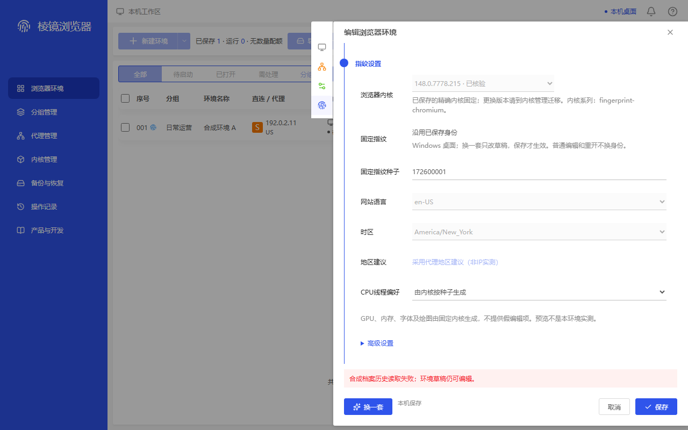
4dd7ad638469b20a58230077f79c8e375f1f1dfccf295534d23e22c9e5d6f743
env-drawer-native-create-terminal-zero-editable-draft · 1280×800
ADAPTED — Full selected A-build/version/status and family helper fit; no V01 clipping.,Full terminal-zero-completion/draft-retained red strip is readable above footer, distinct from uncertain pending state.,Fixed seed and identity/language/timezone/CPU/safety content fit at this body focus; no new overlay collision.,Create title, 换一套/local-save hint and all fixed Create controls remain visible; local zero-result recovery is ADAPTED.,Direct original terminal-zero state is MISSING; no native zero-effect result, editable interaction, original-operation settlement or no-dispatch behavior is certified.
同类参考容器：environment-create；不是同名原商业执行。
71ca22390a1d2a3694752970c1d0ebd9e3b9f036f1912bd61db0f1560689dca1
env-drawer-native-create-persistence-pending-no-success · 1280×800
ADAPTED — Actual task panel fits at x158–422/y725–776, before rail/drawer, with spinner, complete 创建环境 · 1 / 1 and 取消余下任务 text; no V03 footer overlap.,Full 换一套, 原请求待核实, disabled-looking Cancel and 重试核实创建结果 footer are unobscured; Create title is readable.,Complete disabled-looking A-build/version/status and full family helper fit; V01 does not recur. Fixed identity/seed and safety rows retain normal spacing.,Advanced-settings link is partly clipped at body's lower scroll boundary, not hidden by the relocated task; it is not the required technical source focus in this image.,1 / 1/extra synthetic row is not persisted-success proof. Local pending presentation is ADAPTED, exact original is MISSING; settlement, activation/inertness across other contexts and native effects are unproved.
同类参考容器：environment-create；不是同名原商业执行。
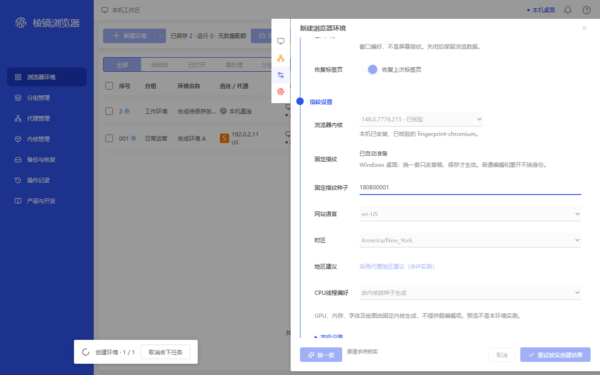
2ddf18d76c244119433f86c4b687c3f3cdbef87d23516c249d090fb7c9aef990